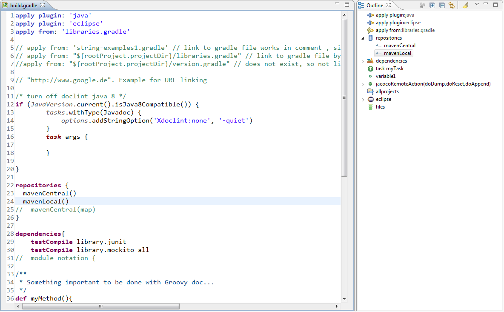

User guide
User guide
EGradle has an integrated editor with following features:

Open a gradle build file with the EGradle editor. If the outline view is already active it will appear automatically, otherwise activate the view:

The outline view will give you a reduced view of your current gradle build file.

The outline view can be linked with Editor. In the left picture you see a linked outline. When you click on the red circled button it will change to the purple circled version and the editor is no more linked with the outline.
A linked outline will correspond on editor caret changes and also set caret and selection if user selects a position inside outline view by one single click.
An unlinked outline has still the ability to select parts of editor - a double click to outline item will do the selection too.
|
Inside editor preferences you are able to setup the default link behavior of new opened outlines

EGradle editor will automatically parse the opened gradle file and mark all parse errors. In next image a closing bracket is missing:
The errors will be persisted and remain until parse errors are resolved.